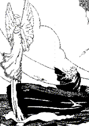

Tour An Arvor
Ton|
I
1. - Piw ac'hanoc'h-hu a welas, mordud, E-beg an tour, e-ribl an traezh; E-beg tour krenn Kastell Arvor, Arvor Daoulinet Itron Azenor?. 2. - An Itron on-eus ni gwelet, Aotrou, E prenestr an tour daoulinet Drouglivet he chod, du he zae, Sioul he c'halon koulskoude. II 3. Erru kannadourien eun deiz, en hañv, Uhella gwad diouzh a Vreizh, Sternioù arc'hant, dilhad melen, Kezeg glas, frank ha ruz ho fronell. 4. Ar gedour abaoe o gwelas, o tont, Da gaout ar roue a eas - Setu daouzek o tont d'al laez, Digoret vo ar perzhier dezhe ? 5. - Ra vo ar perzhier digoret, gedour, Ra vint seder-degemeret, Ra vo savet an daol timat, Pa zegemer, degemer mad! 6. A-berzh mab or roue eomp deuet, Aotrou, Da c'houlenn ho merc'h da bried Da c'houlenn ho merc'h gant enor, Da bried ho merc'h Azenor. 7. - Laosket a-walc'h a vo gantañ, va merc'h, Paotr uhel ha koant, a glevan. Koant hag uhel va merc'h ivez, Kuñv vel un evn, gwenn evel laezh.- 8. Eskob Is eured a lidas, laouenn, Ha pemzek deiz krenn a badaz; Pemzek deiz banvez ha koroll, An delenourien en o roll. 9. - Da eo ganeoc'h va gwreg jolis, bremañ, Ma 'z aimp-ni d'ar gêr war hor c'hiz ? - Ne ran forzh, va fried nevez, Lec'h a yefec'h, me yey ivez.- 10. He mamm-gaer evel m'he gwelas, erru, Gant an erez-tag a vougas: "Ober a ray an oll bremañ, bremañ Fouge gant ar beg melen-mañ!" 11. An alc'hwez nevez a garer, setu ! An alc'hwez gozh a zisprizer, Ha koulskoude peurliesañ An alc'hwez gozh zo an aessañ.- 12. Ne oa ket seizh miz echuet, me gred, D'he lezvab he-deus lavaret: - Da vefe ganeoc'h, paotr a Vreizh, a Vreizh, Diwall al loar diouzh ar bleiz? 13. Lakit evezh, ma em c'hredit, sellit, Ober a reot mar n'hec'h eus graet Lakit evezh d'ho prud, aotrou, Mirit ho neizh deus ar goukou. 14. - Ma e-leal am c'helennit, itron, Bremaik hi a vo bac'het E-barzh an tour krenn vo laket, Hag a-benn tri deiz vo devet. - III 15. Ar roue kozh adal ma glevas ar vrud, Leizh e galon gouelañ a reas, Ha sachet 'deus blev gwenn e benn : - Gwa me ! gwa me ! re ma on hen !- 16. Ar roue kozh a c'houlenne, paour-kaezh ! Gant ar verdeidi neuze : - Merdeidi, na nac'het ket : Daoust hag ema va merc'h devet ? 17. - Ho merc'h ned eo ket devet, c'hoazh, Devet a vo a-benn warc'hoazh. 'Ma-hi atav e beg an tour, O kanañ he c'hlevis neizhour. 18. O kanañ he c'hlevis neizhour, aotrou, O kanañ sioul, o kanañ flour: «Ho-pezit, ho-pezit truez, Truez outo, O va Doue ! » - IV 19. Azenor o voned d'an tan, d'an deiz, Ken dibreder evel un oan, Gwenn he dilhad ha diarc'henn, diarc'henn, Flak war he skoaz he blev melen 20. Azenor o voned d'an tan, paourez, Holl a lare bras ha bihan: - Pec'hed eo, sur, pec'hed marvel Deviñ ur c'hwreg tost da c'henel ! - 21. Holl hirvoude, bras ha bihan, en hent, Nemet he mamm-gaer he-unan : - Ned eo ket pec'hed, nemet mad, Mougañ an naer gant he c'hofad! - |
 22. - Plantit c'hwezh, tanourien seder! plantit! Ma pego an tan ruz ha taer ! - Plantomp c'hwezh, paotred, d'an tizh-vat, Ma pego an tan-mañ ervad! - 23. Kaer o-devoa c'hwezhañ ha c'hwezhiñ, c'hwezhañ Na bege an tan dindane; C'hwezhiñ, c'hwezhañ, c'hwezhañ, c'hwezhiñ, Ne zeue an tan da begiñ. 24. Ar penn-barnour adal ma welas ar bec'h Souezhet a-grenn e jomas: - Bamet, emichañs, an tan ganti. Pa ne zev ket, red eo he beuziñ!- V 25. - Petra war vor ho-peus gwelet, merdead? - Ur vag heb roeñv na gouel ebet; Ha war an aros, da sturier, Un ael e eskell digor kaer! 26. Ur vag war vor a welis pell, Aotrou, Ur c'hwreg enni gant he bugel, He bugelig d'eus he bronn wenn, Vel ur goulm ouzh ribl ur gregen. 27. ' Deus he geinig noazh a boke, boke, Ha dezhañ ker kaer a gane: "Toutouik-lalla, va mabig, Toutouik-lalla 'ta, paourig! 28. Mar ve da dad ha da welfe, va mab, Ganout-te fouge e-nefe Mes siwazh ! n'az kwelo nepred. Da dad, paourig, a zo kollet."- VI 29. Kastell Arvor zo saouzanet, avat, Mar d'eo bet biskoazh kastell 'bed, Strafuilh bras a zo er c'hastell : Ar vamm-gaer zo' vont da vervel. 30. - An ifern em harz zo digor, lezvab, En añv Doue ! deuit d'am sikour ! Deut d'am sikour, me zo daonet! Ho pried c'hlan am eus gwallet ! - 31. Ne oa ket he genoù serret, setu, Setu o tont un naer flemmet O c'hwibanat, stlejas e-maez, Hag he flemmas hag he mougas. 32. Hag he lezvab e-maez raktal, ha kuit, Ha kuit trezek ar broioù all Hag eñ war zouar ha war vor, O klask keloù d'eus Azenor. 33. Klasket e-noa war-zu sav-heol, e c'hwreg, Klasket e-noa war-zu c'huzh-heol; Klasket e-noa war-zu c'hreisteiz, Er c'holern ivez he c'hlaske. 34. Pa zouare en enez vras, war-dro, Ur paotrig eno war an traezh, Hag eñ o c'hoari 'tal ar red, O tastum kregin 'n e roched. 35. Melen e vlev, glas e lagad, glas-mor, Heñvel ouzh Azenor, avat Ken a lak kalon mab a Vreizh Da huanadañ en e c'hreiz. 36. - Piv eo da dad, va bugel-me, piv eo? - N'am eus hini nemet Doue, Kollet, tri bloaz zo, neb a oe Va mamm a ouel o koun da se 37. Na piv da vamm? Na pelec'h eo, mabig? - Kannerez, Aotrou, 'n hini eo, Na hi du-se gant an toalioù. - Na deomp-ni d'he c'havout hon-daou! - 38. Ha da beg e dorn ar bugel, a-raok, Hag i da zont trema 'r stivell ; Hag o tont e virve ar gwad E dorn ar mab ouzh dorn an tad. 39. - Va mammig kaezh, sav alese, ha sell: Setu va zad ! askavet eo ! Setu va zad a oa kollet! Ra vezo Doue kanmeulet !- |
' Zaskor an tad d'ar vugale
Distroiñ ' reont laouen da Vreizh.
Bennoz an Drinded gant an treizh !